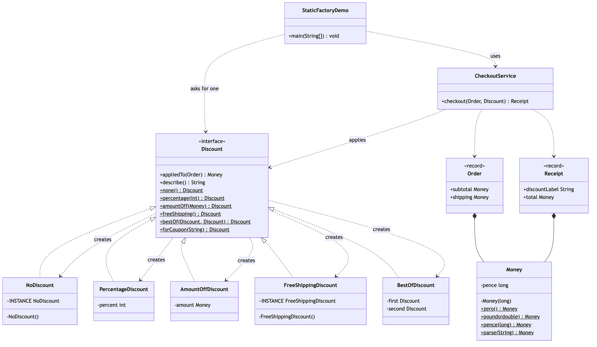
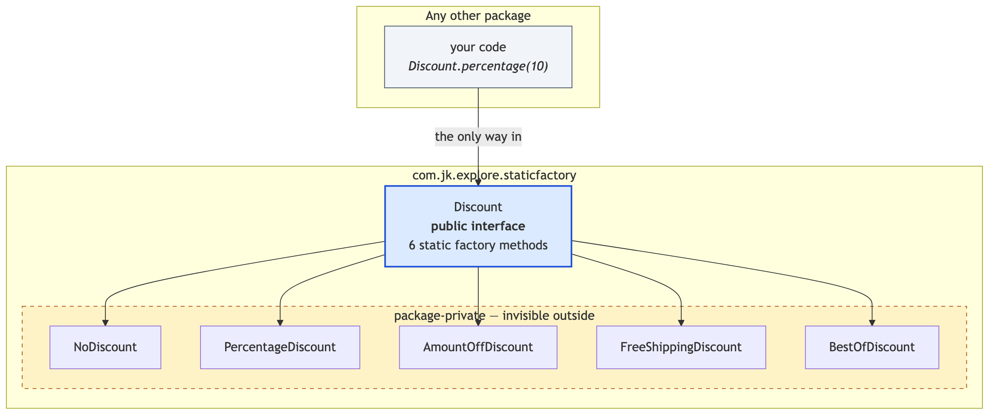

Static Factory Method
Demonstrates the static factory method — Item 1 of Effective Java, and the most-used creational technique in the language — using discounts on an e-commerce order.
It is not a Gang of Four pattern, and it is not the same thing as Factory Method despite the name. It is, however, where creation problems should start, and the other three projects in this folder are what you graduate to.
Discount— a public interface with six static factory methods:none(),percentage(int),amountOff(Money),freeShipping(),bestOf(...)andforCoupon(String). The type is its own factory. There is no separate factory class anywhere in the project.NoDiscount,PercentageDiscount,AmountOffDiscount,FreeShippingDiscount,BestOfDiscount— the five implementations. Not one of them ispublic, so no code outside the package can name them.Money— the same idea on a value type. Private constructor;Money.pounds(2.50)andMoney.pence(250)are the same amount reached by two differently named doors, which no pair of constructors could have been.CheckoutService— the client. It applies whatever discount it is handed. Nonew, noif, no mention of any implementation class.Order/Receipt— plain records. They have nothing to decide, so a constructor is right for them, and the contrast is deliberate.StaticFactoryDemo— runnable entry point that prices one order under five coupon codes, then proves the two things a constructor cannot do.
The point in one line: Discount.percentage(0) hands you back the shared do-nothing discount instead of a percentage discount of zero — and nothing in your code can tell, because your code never knew the class names to begin with.
Run
./gradlew runWhich prints:
Coupon: SAVE10
Checkout: order ORD-4001 subtotal £120.00 + shipping £4.99
Checkout: 10% off saves £12.00
Checkout: total £112.99
Receipt: Receipt[orderId=ORD-4001, subtotal=£120.00, shipping=£4.99, discountLabel=10% off, discountAmount=£12.00, total=£112.99]
Coupon: FIVEROFF
Checkout: order ORD-4001 subtotal £120.00 + shipping £4.99
Checkout: £5.00 off saves £5.00
Checkout: total £119.99
Receipt: Receipt[orderId=ORD-4001, subtotal=£120.00, shipping=£4.99, discountLabel=£5.00 off, discountAmount=£5.00, total=£119.99]
Coupon: FREESHIP
Checkout: order ORD-4001 subtotal £120.00 + shipping £4.99
Checkout: Free shipping saves £4.99
Checkout: total £120.00
Receipt: Receipt[orderId=ORD-4001, subtotal=£120.00, shipping=£4.99, discountLabel=Free shipping, discountAmount=£4.99, total=£120.00]
Coupon: BESTDEAL
Checkout: order ORD-4001 subtotal £120.00 + shipping £4.99
Checkout: Best of: 10% off / £5.00 off saves £12.00
Checkout: total £112.99
Receipt: Receipt[orderId=ORD-4001, subtotal=£120.00, shipping=£4.99, discountLabel=Best of: 10% off / £5.00 off, discountAmount=£12.00, total=£112.99]
Coupon: (none)
Checkout: order ORD-4001 subtotal £120.00 + shipping £4.99
Checkout: No discount saves £0.00
Checkout: total £124.99
Receipt: Receipt[orderId=ORD-4001, subtotal=£120.00, shipping=£4.99, discountLabel=No discount, discountAmount=£0.00, total=£124.99]
percentage(10) -> 10% off
amountOff(£10) -> £10.00 off
none() is shared: true
zero() is shared: true
percentage(0) -> No discount
Rejected: unknown coupon code: SAVE99Test
./gradlew testThirty-four tests, covering the naming, the shared instances, the substituted classes and the hidden implementations.
Learning Material
Start here if you are new to the technique — the docs are ordered as a learning path.
| Document | What it covers |
|---|---|
docs/prerequisites.md | What to know and install before you start |
docs/problem-statement.md | The problem, starting from a constructor that will not compile |
docs/static-factory-pattern-explained.md | The technique, the code walked through, naming conventions, and the costs |
docs/class-diagram.md | Static structure, and the package boundary |
docs/uml-diagram.md | Runtime call flow |
docs/animation.html | Animated, step-by-step walkthrough — open in a browser. Optional narration via the Narration button |
docs/session.md | A 60-minute guided session plan for teaching it |
docs/video-spec.md | The specification the teaching video is built to — outputs, slide system, narration rules, and how to port it to another project |
docs/youtube.md | Title, description, chapters and thumbnail for publishing the video |
docs/thumbnail.png | The 1280×720 image to upload as the YouTube thumbnail |
docs/spec.md | The project specification — problem, code, video and publishing quality bar. Also as spec.html |
video/ | A narrated ~12 minute video, plus the script and build pipeline |

The pattern in one picture

What the caller can see

Video
video/static-factory-pattern-explained.mp4 — 1080p, ~12 minutes, narrated. An audio-only version is alongside it. See video/README.md to rebuild or re-record it.
Related
The four factory projects in this repository are best read in order:
- This project — no factory class at all. The type names its own ways in, and picks what to return.
../simple-factory-pattern— the creation logic moves out into a helper class with aswitch, choosing one object.../factory-method-pattern— the choice moves into the type system. A creator writes a workflow with a hole in it, and subclasses fill the hole with one object each.../../structural/facade-patternis unrelated to creation, but pairs well: it hides a whole subsystem the same way this hides a set of classes.
And ../abstract-factory-pattern completes the creational set: one decision that produces a whole matching set of objects.
Static Factory asks "give me one that…". Simple Factory asks "which one?". Factory Method asks "which one — decided by my subclass?". Abstract Factory asks "which set?".